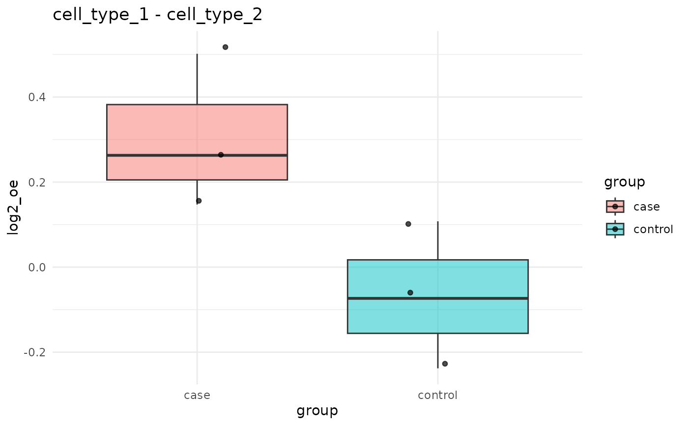

Per-sample boxplot of one (or several) cluster pair(s) across groups
Source:R/group_compare_plots.R
plot_pair_boxplot.RdPer-sample boxplot of one (or several) cluster pair(s) across groups
Usage
plot_pair_boxplot(
per_sample_df,
value = "zscore",
group_key = "group",
pair_keys = c("cluster_i", "cluster_j"),
pairs = NULL,
point = TRUE,
add_p = FALSE,
ref_group = NULL
)Arguments
- per_sample_df
Tidy per-sample data.frame from a `*_per_sample()` helper.
- value
Numeric column to plot. Defaults to "zscore".
- group_key
Column with disease group. Defaults to "group".
- pair_keys
Column names identifying the cluster pair.
- pairs
Optional data.frame (or list of length-2 vectors) selecting which cluster pairs to plot. If NULL, plots all pairs as a facetted grid (use sparingly for many pairs).
- point
Logical, overlay individual sample points.
- add_p
Logical, overlay a Wilcoxon p-value on each panel.
- ref_group
Optional ref group for the displayed p-value sign / ordering. Passed to [compare_groups()] when computing p-values.
Examples
if (requireNamespace("ggplot2", quietly = TRUE)) {
df <- generate_sim_groups(n_samples_per_group = 3,
group_close_ratio = list(case = 0.8, control = 0.2),
n_types = 4, n_cells = 200, max_loc = 250,
test_type = "distribute", distance_param = 8,
seed = 1)
ps <- nhood_enrichment_per_sample(df, sample_key = "sample_id",
group_key = "group",
cluster_key = "cell_type",
patient_key = "patient",
neighbors.k = 8, n_perms = 20, n_jobs = 1)
plot_pair_boxplot(ps, value = "log2_oe",
pairs = data.frame(cluster_i = "cell_type_1",
cluster_j = "cell_type_2"))
}
